Galeria
180 zdjec z tekstow — kliknij aby zobaczyc wieksze i przejsc do tekstu.
Ciąg dalszy grawitacji ku Prawdzie (w życiu i śmierci) (cz. 4)
15 kwietnia 2026

Siła grawitacji Prawdy (cz. 3)
15 kwietnia 2026

Ciąg dalszy nastąpił. Grawitacja ku Prawdzie (cz. 2)
15 kwietnia 2026
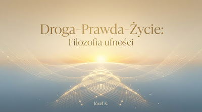
R-E-W-E-L-A-C-J-A (dla mnie). Wymagająca dopracowania redakcji
22 lutego 2026
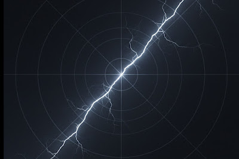
Po stronie światła — przypowieść o świadomości, albo mistyka współczesnego rozum
29 stycznia 2026
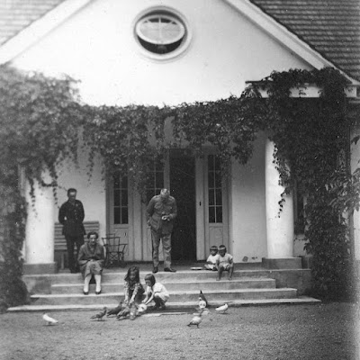
Obowiązki listopadowe Polek i Polaków (stare i całkiem nowe)
11 listopada 2025
FRESK NAUCZYCIELSKO-WOJENNY O… nas?
27 października 2025
ŚWIĘTO NIE-SOLIDARNOŚCI - ŚWIĘTO PODZIAŁÓW POLEK I POLAKÓW
31 sierpnia 2025
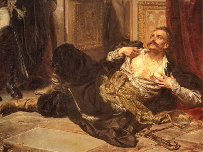
Reytan 1773, a Sprawa Polska AD 2025 (o antropologii społecznej słów kilka)
1 lipca 2025
Dusz-pasterstwo a wybory. Wiara i rozum szukające prawdy!
27 czerwca 2025
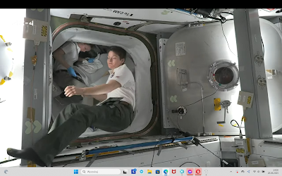
Kosmos i praworządność a sprawa polska
26 czerwca 2025
Po śmierci jednego z nas (10 milionów Solidarności)
14 czerwca 2025
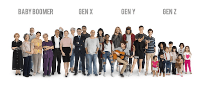
Tożsamość i AI (sztuczna inteligencja) jako argumenty w walce o PRAWDĘ - w łańcu
12 czerwca 2025
Sztuka (zapis) świętowania 80-lecia szkoły... i jedności ponadpokoleniowej
7 czerwca 2025
Polska na fundamencie fałszu
5 czerwca 2025
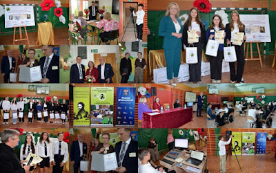
Święto Wieszcza i Rzeczpospolitej Norwidowskiej
23 maja 2025
Mój fenomenologiczny głos - o życiu i wyborach AD 2025 (po I turze)
19 maja 2025
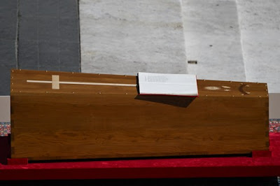
Śmierć błogosławiona. Fenomenologia Jezusa Chrystusa
27 kwietnia 2025
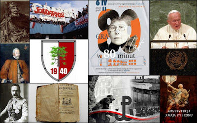
Tożsamość. Przez solidarność pokoleń, ku przyszłości narodów
10 kwietnia 2025
FILOZOFIA (moja i... teologia) Społecznego Funduszu Stypendialnego…
30 marca 2025
Hańba w Białym Domu (Disgrace in the Oval Office)
1 marca 2025
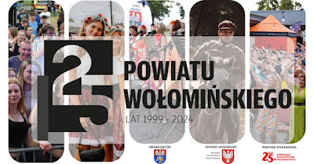
ROCZNICOWY NAMYSŁ NAD (MOIM) POWIATEM (I POLSKĄ)
27 listopada 2024
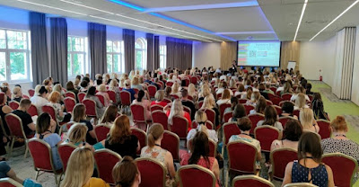
Strachówko, pamiętasz? (post o szkole, z 2009)
17 listopada 2024
Świętowanie pełne refleksji
11 listopada 2024
Kościół świętości i tradycji trwania w wyższości i zakłamaniu
9 listopada 2024
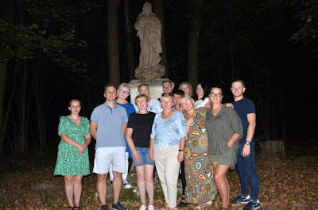
WYDARZENIE "U Matki Bożej Annopolskiej w dniu 30 sierpnia 2024" (praca patchwork
24 października 2024
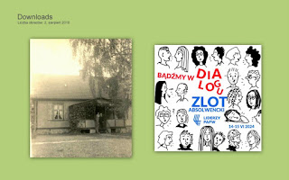
Polska gminna, parafialna, samo-rządowa. (Z)marnowany potencjał i kryzys sensu?!
15 czerwca 2024
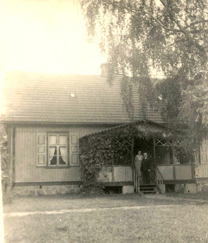
Cisza (o czym) w wyborach mieszkańców. Kulturowa pustka? Pomimo bogactwa. Dlacze
6 kwietnia 2024
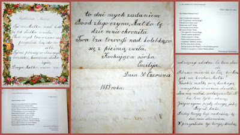
Aborcja, jako moje późne, ale obowiązkowe rozważania imieninowo-urodzinowe
28 marca 2024
O miłości… szerzej, mimochodem
7 marca 2024
Trzy posty i wiersz ułożyły tę treść (z podwojeniem w komentarzach)
7 lutego 2024
Podziw dla Ministra Bodnara i... oskarżam Kościół.PL (o burdel moralno-ustrojowy
29 stycznia 2024
Objaśnianie normalności - niechciana misja Kościoła.PL i obywatelskie wyznanie w
13 grudnia 2023
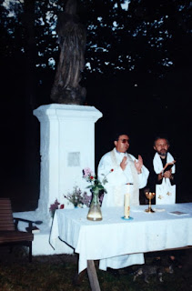
ŚP Antoni Czajkowski - świadectwo o zmarłym, które potrzebne jest żywym
26 listopada 2023
Walka na misje, czyli polityka i metafizyka
10 listopada 2023
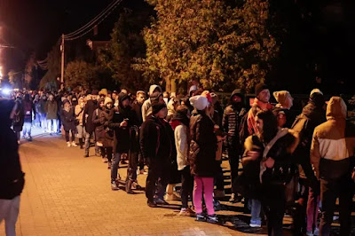
Polsko, Polsko, Kościele, kościele.pl. Chcę śpiewać hymn dziękczynienia po wybor
18 października 2023
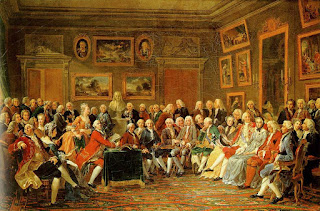
Kardynał i kurtyzana a sprawa polska (w Strachówce)
18 września 2023
"Jestem z Wami" - o śp ks. Mieczysławie Iwanickim, proboszczu Strachówki 1974-19
26 sierpnia 2023
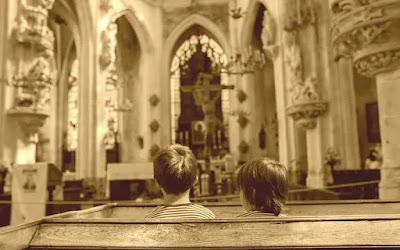
Niewzruszone - antykonstytucyjne - podwaliny polskiej świadomości?
21 lipca 2023
Pytanie rzecznika - za co nienawidzicie PiS-u
22 marca 2023
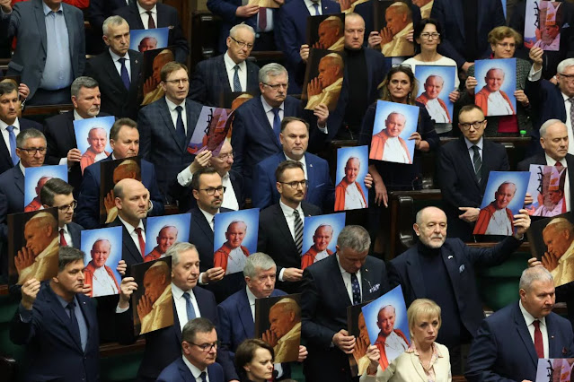
Robią sobie dobrze. Ani wierze, ani rozumowi, ani ich iunctim
17 marca 2023
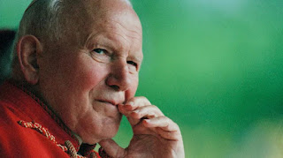
Wiedział? Nie wiedział? - czyli, co, kto wie, lub intencjonalnie "nie wie"
10 marca 2023
8 lat, bez mała, skandalicznego ustroju (gwałtu rozumu i kultury)
16 lutego 2023
Dobro dziecka w Tłuszcza okolicach – rozumowanie
29 listopada 2022
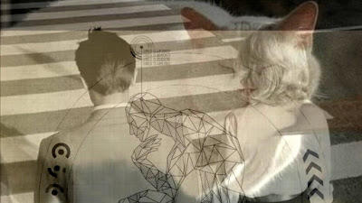
Skończyć swoją fenomenologię (dokończyć moją)
11 października 2022
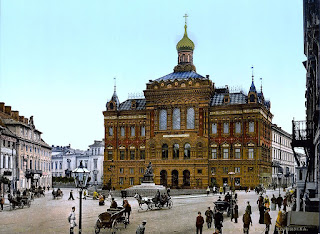
Duch czasu i duch miejsca w moim życiu. Annopol-Strachówka-Legionowo
5 października 2022
Nagroda za wytrwałość (władza i sacrum, sacrum i władza... nad kim, nad czym)
18 września 2022
Niepowszechny PiS-katolicyzm (polsko-katolickie PiS)
8 września 2022
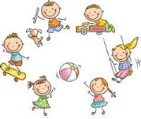
Strachówka, Rozalin - sprawa Ignasia, innych dzieci... i Rodziny Rodzin
5 września 2022
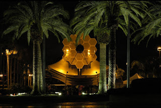
Metafizyka, fenomenologia (życia) - implikacje światopoglądowo-kulturowo-polityc
20 sierpnia 2022
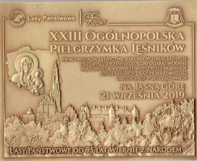
Hipokryzja ustrojowa (ultrakatolickiego PiS-KEP-ustroju) - gwałt na wierze, rozu
9 kwietnia 2021
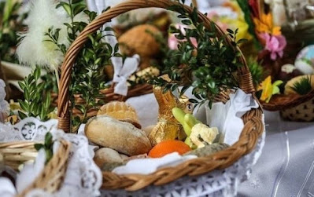
Post ustrojowy wymuszony Życiem (Drogą-Prawdą-Życiem)
26 marca 2021
O pseudo-katolickim PiS-KEP-ustroju. Pisane ciśnieniem czasu (Rok Norwidowski 20
19 marca 2021
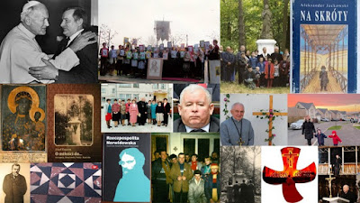
"To plucie Chrystusowi w twarz". Wielki Post 2021. Rok Norwidowski!
4 marca 2021
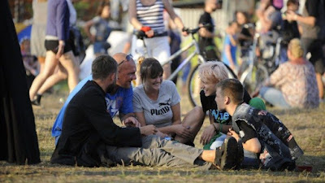
Kongres Katoliczek i Katolików, czyli i Rzeczpospolita Norwidowska 2021(?)
19 lutego 2021
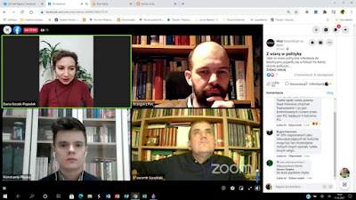
Po co (jeszcze) żyję
11 lutego 2021
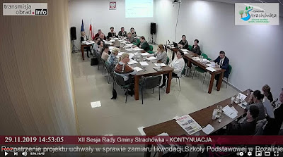
ZAPROSZENIE w Roku Norwidowskim, z pomocą niezłomnego księdza Jastaka i Ministra
3 lutego 2021
Patologia religijno-narodowa PiS-KEP-ustroju! Brrr!
1 lutego 2021
Uderzmy w sedno... PODZIAŁÓW - mentalnych, czyli i politycznych i religijnych. F
30 stycznia 2021
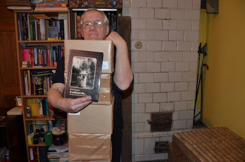
Uderzmy w sedno polskich spraw, polskich PODZIAŁÓW - mentalnych, czyli i polityc
26 stycznia 2021
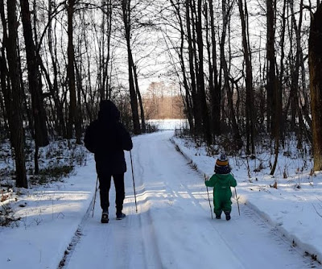
Międzypokoleniowe rozważania o mszy, życiu, realizmie plus+ ksiądz, Internauta,
23 stycznia 2021
Przeciw abp. Jędraszewskiemu - niemoralność PiS-KEP-ustroju (2)
20 stycznia 2021
Przeciw Kaczyńskiemu - niemoralność PiS-KEP-ustroju (1)
19 stycznia 2021
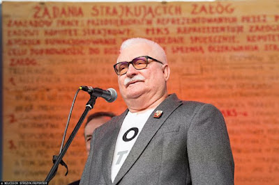
Zaszczepić po PRL, czyli ustrojowe bagno - o tym trzeba mówić (krzyczeć)
5 stycznia 2021
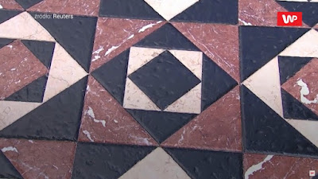
STRACHÓWKA - historia walki z Norwidem. Walka o prawdę i prawa człowieka 2021
31 grudnia 2020
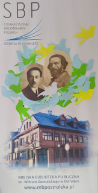
Poezja Cypriana Norwida a teoria dzieła literackiego Romana Ingardena
18 grudnia 2020
Mój 13 Grudnia 1981
13 grudnia 2020
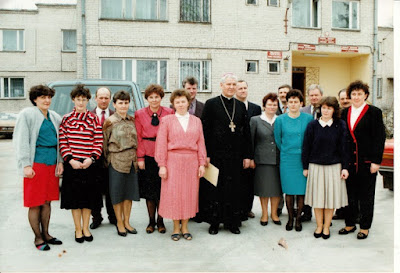
Gminna Komisja Kultury - metodologicznie o 200. rocznicy urodzin Norwida w gmini
14 listopada 2020
Nie strasz grzechem siostry ani brata swego! Non abbiate paura!
1 listopada 2020
Czy można zapomnieć? - likwidacja getta w Jadowie - Wspólna Polska?!
17 października 2020
Księdzu Profesorowi Alfredowi Wierzbickiemu z Katolickiego Uniwersytetu Lubelski
6 października 2020
Po co PiS-KEP-ustrojowi spór o LGBT?
2 października 2020
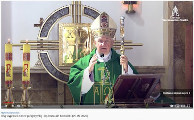
Tworzenie nowej rzeczywistości (gwałt PiS-KEP-ustroju na rozumie i kulturze czło
21 września 2020
Gwałt PiS-KEP-ustroju na rozumie i kulturze człowieka na ziemi
11 września 2020
Ojczyzna, POLSKA, niszczona fałszem PiS-KEP-ustroju! Deprywacja, deprawacja, dem
7 sierpnia 2020
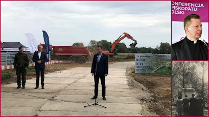
Piss-kultura+, czyli mentalność PiS-KEP-katolicko-narodowa
5 sierpnia 2020
Schizma po polsku? L'ordre règne à Varsovie i schizma naszych czasów?
4 sierpnia 2020
DZIEL, PRZEMILCZAJ i RZĄDŹ. Polska i świat według PiS-KEP-ustroju od 2015
31 lipca 2020
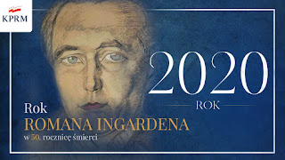
Roman Ingarden „Filozof i fotograf” | 'Philosopher and Photographer'
30 lipca 2020
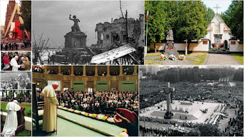
W obronie WARSZAWY! Rzeczpospolita Norwidowska!?
28 lipca 2020
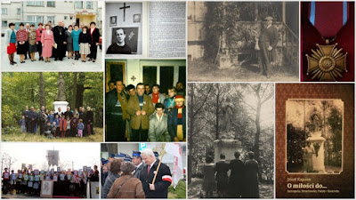
Możliwość teologii jako fenomenologii. Przyczynki osobiste bardzo.
26 lipca 2020
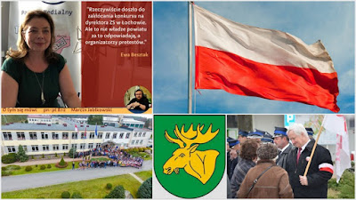
SZKOŁA BEZ DYREKTORA - czyli o co chodzi w Węgrowie, Łochowie, Strachówce... Pol
25 lipca 2020
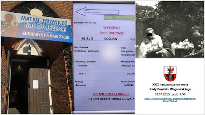
PL.2020 - Piss-katolicka demo...mon...stran...cja cze-czego?
24 lipca 2020
Złoty róg, czy klucze królestwa? Felieton? Esej? ŻYCIE.PL.2020
20 lipca 2020
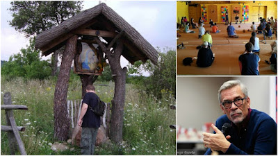
Polskie schematy i uprzedzenia (nie dla nich żyłem)
19 lipca 2020
Kościele w Polsce, gdzie jesteś!
17 lipca 2020
Godzilla atakuje! PiS-KEP-ustrój i ośmieszanie religii.
16 lipca 2020
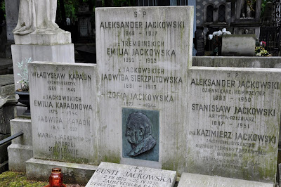
SZTUKA ZWANA NAIWNĄ I CO DALEJ... /śp. prof. Al. Jackowski/
13 lipca 2020
Dzień wyborczy z prof. Stawrowskim
12 lipca 2020
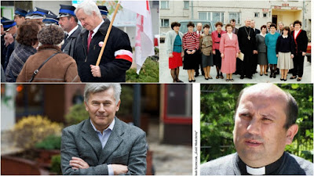
"RUSZAJ Z BOGIEM" - (nie)rozmowy (nie)wierzących Polek i Polaków
11 lipca 2020
Narracja A. DUDY - jakby prawdy i Boga nie było (ostry cień mgły)
10 lipca 2020
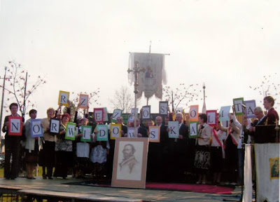
Dlaczego Trzaskowski - jaką Polskę wybieram (i Boga), wybierajac Trzaskowskiego
9 lipca 2020
Mężowie zaufania na 12 lipca 2020 - instrukcja
8 lipca 2020
Co mi dała kampania Rafała Trzaskowskiego (już)!
6 lipca 2020
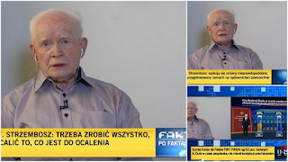
Polska rozdyskutowana (wreszcie)! Fałszywa antropologia, czyli antyhumanizm PiS-
5 lipca 2020
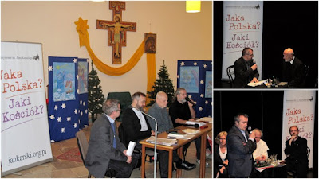
Wybory a wiara, religia i Kościół
4 lipca 2020
Ideały - siostra, brat, Rodak i bliźni, czy szowinista-Polak-katolik
3 lipca 2020
Mam tego dość - od pięciu lat ustrojowego gwałtu w biały dzień i czarną noc na r
2 lipca 2020
Drogi i prawda naszych wyborów (antropologia i teologia wyborcza)
30 czerwca 2020
Trzaskowskiemu - z polskiej wsi i powiatu (Annopol, Rozalin, Wołomin)
29 czerwca 2020
Filozofia Drogi-Prawdy-Życia. Propozycja
25 czerwca 2020
PiS-KEP-ustrój manipuluje religią. Hola-hola!
24 czerwca 2020
Implikacje filozoficzne, społeczno-polityczne, teologiczne
22 czerwca 2020
Po co żyję (jeszcze) - o ustroju PiS-KEP-u
19 czerwca 2020
Śmierć i życie w przestrzeni publicznej
17 czerwca 2020
Ustrój PiS-KEP-u trzeszczy. Sypie się!
17 czerwca 2020
Standardy PiS-KEP-ustroju (PiS-KEP-ludzi), czyli bałwochwalstwo Prezesa
11 czerwca 2020
Mój ksiądz, mój Kościół - śp Stanisław Walczak (w Rzeczpospolitej Norwidowskiej)
10 czerwca 2020
PRP - Poważne Rozmowy Polaków. Uratować dla dobra wspólnego, od zapomnienia! (1)
29 października 2019
Ziarno Solidarności po 40 latach i więcej (B)
25 października 2019

Strachówka (RzN) w soczewce spraw polskich. Zdrady pamięci i tożsamości! (A)
23 października 2019
Zdrada ukorzeniona i bycie zdradzonym
21 października 2019
Bogactwo nieprzebrane! Trudny piękny dzień, czyli Kościół i Polska 2019 (przeciw
19 października 2019
Sądny dzień w STRACHÓWCE (w naszej Strachóweczce)
16 października 2019
Nobel-prawda-kultura-polityka i diabelstwo.pl
11 października 2019
Anty PiS-KEP-Polska, antyprymas... antykościół.pl - Papieżu ratuj!
10 października 2019
W jakim świetle? - Polska moja i PiS-KEP-u
9 października 2019
Polska moja i PiS-KEP-u. Tęcza zachwytu i jej brzydkie-agresywne oblicze.
7 października 2019
Obywatelskie podrygi i PiS-KEP-polska herezja
5 października 2019
Obywatelska debata w Wołominie
4 października 2019
Polska broszura (anty)wyborcza
3 października 2019
Dziękuję STRACHÓWKO!
28 września 2019
Mój katolicyzm i dzieci
27 września 2019
Zgnilizna moralna PiS (Prezesa i PiS-KEP-ustroju.pl). OBRZYDLIWOŚĆ (OSOBO-USTROJ
26 września 2019
PiS i anty-PiS wzmożenie (antyaferalnie)
25 września 2019
O historii prawdziwej (Legionowo i Polska w Strachówce)
24 września 2019
Objawienie. Mąż-ojciec-solidarnosciowiec-katecheta-samorządowiec-wspólnotowiec (
23 września 2019
Antykatolickie (bez)myślenie o prawie i sprawiedliwości (PiS)
22 września 2019
Rozmowa wierzących Polaków (Dei Verbum)
21 września 2019
Gdzie jesteś inteligencjo katolicka (apel przeciw PiS-katolicyzmowi)
20 września 2019
Boże dziękuję Ci za Adama Strzembosza, Profesora-Polaka-Człowieka
19 września 2019
PiS jest możliwy tylko w antysoborowej Polsce (cynizm antykatolicki)
17 września 2019
Polsko-katolicki dramat antywspółczesności
16 września 2019
Posługa myślenia. Anty-Kaczyński
14 września 2019
Post wymuszony PiS-Polską Kaczyńskiego
13 września 2019
PiS-leninizm
10 września 2019
Annopolskie świętowanie 8 września (od 1910)
8 września 2019
Sens rośnie z nami (obok, w nas)
6 września 2019
1.IX - Zjednoczona Europa znakiem nadziei dla świata i Kościoła. Boso!
1 września 2019
O miłości i hejcie w Polsce PiS (i nie tylko) (2)
31 sierpnia 2019
O miłości i hejcie w Polsce PiS (i nie tylko) (1)
28 sierpnia 2019
PiS gwałci rozum i kulturę człowieka na ziemi („Jaka myśl, taki czyn")
26 sierpnia 2019
Małgorzata Irena Sikorska: Polska jest nasza, nie prezesa.
25 sierpnia 2019
Ministerstwo hejtu, czyli pisss gwałt na rozumie i kulturze
21 sierpnia 2019
Dramat Kościoła, dramat świata
20 sierpnia 2019

Przekłamania w Kościele Katolickim.pl – odezwa (apel) do moich biskupów
19 sierpnia 2019
15 Sierpnia- kwiaty dla plutonowego Czerwińskiego i Polski
15 sierpnia 2019
List otwarty wyborcy do Grzegorza Schetyny
13 sierpnia 2019
W opozycji do rządzących i… opozycji! A po Płocku przeszedł marsz!
10 sierpnia 2019
Królewska droga (i fascynująca przygoda)
3 sierpnia 2019
Prawda, która przymusza (o Polsce i Kościele)
27 lipca 2019
Tęcza zachwytu, gra w palanta i tradycja wolnościowa (2)
25 lipca 2019
Szczuczyn, Żydzi, LGBT i moja sprawa polska
23 lipca 2019
Gra w palanta i tradycja wolnościowa (1)
17 lipca 2019
Węgrów wczoraj, dzisiaj i zawsze... PiS dodał nam skrzydeł! (Po)rozmawiajmy! ; -
7 lipca 2019
Węgrowskie Termopile. Byłem tam!
6 lipca 2019
Intruz(ka) - rocznicowe pisanie dnia 3 lipca
3 lipca 2019
STRACHÓWKA - rejs po życiu, prawdzie i historii
2 lipca 2019
Hejtowanie mieszkańców i mało samorządna Ojczyzna (Kościół included)! Życie z (
28 czerwca 2019
Polska 2019 i współodpowiedzialność Kościoła (Suplikacje polskie)
26 czerwca 2019
Świat dobry (dobra) i bezrozumny kociokwik
24 czerwca 2019
Zło w Kościele! Fałsz? Przemilczanie! Nieszczerość!
22 czerwca 2019
Seksualizacja dzieci i nie tylko (wiara i rozum)
21 czerwca 2019
Przyszłość Strachówki (Polski i Kościoła.PL). Pendant?!
18 czerwca 2019
Pytania przed jutrzejszym festynem w Strachówce
14 czerwca 2019
Pointelektualizujmy trochę. Wreszcie!
7 czerwca 2019
Istotowo i konstytutywnie (dowód z kontemplacji)
6 czerwca 2019
Przeżytki (i niedobitki) starego Kościoła
5 czerwca 2019
Zdradzeni przez kościół (historia zakłamania). Głos katechetyczny
4 czerwca 2019
Dlaczego? XXX-lecie Polskiej Wolności, ROK 1989 i Polska 2019!
1 czerwca 2019
Czekając na orzeczenie TSUE (już po wyborach do PE)
31 maja 2019
W przed-wyborczej ciszy
25 maja 2019
Znikczemnione katedry (po PRL)
24 maja 2019
Polska cała chora "kościelnością" (systemem)
22 maja 2019
Destrukcja fałszem (zakłamaniem)
21 maja 2019
Fałsz mojego kościoła
20 maja 2019
Anty-kościół.pl
18 maja 2019
Łaska dialogu (Słowa) - antidotum na pedofilię i wszelki inny grzech
17 maja 2019
Księża profesorowie, teologowie, duszpasterze i pedofile
15 maja 2019
O co chodzi w mojej/naszej Strachówce AD 2019!
14 maja 2019